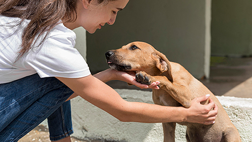

Resgate
Realizamos buscas e atendimentos a animais abandonados, feridos ou vítimas de maus-tratos. A equipe atua com rapidez e cuidado, garantindo que cada resgate seja feito com segurança e respeito à vida.

Realizamos buscas e atendimentos a animais abandonados, feridos ou vítimas de maus-tratos. A equipe atua com rapidez e cuidado, garantindo que cada resgate seja feito com segurança e respeito à vida.
Após o resgate, os animais recebem avaliação clínica, tratamento médico e vacinação. Trabalhamos com veterinários parceiros que oferecem suporte essencial para a recuperação dos bichinhos.
Promovemos mutirões de castração gratuitos ou com preços acessíveis em comunidades vulneráveis. Essa ação ajuda a controlar a população animal e evita o abandono de filhotes.
Contamos com voluntários que oferecem abrigo provisório para animais até que sejam adotados. Os lares temporários são fundamentais para garantir conforto, socialização e cuidados durante a espera por uma família definitiva.
Organizamos eventos em praças, parques e centros comerciais para apresentar os animais disponíveis para adoção. As feiras são momentos de conexão entre os bichinhos e suas futuras famílias.
Realizamos ações educativas em escolas, empresas e redes sociais para promover a posse responsável, o respeito aos animais e a importância da adoção consciente.
“Adotar o Max foi a melhor decisão da minha vida.”
– Juliana, adotante
Conheci a ONG Amor de 4 Patas em uma feira de adoção. O Max estava tímido, mas bastou um olhar para eu saber que ele seria parte da minha família. Hoje ele é meu companheiro inseparável, e sou grata por todo o cuidado que ele recebeu antes de chegar até mim.
“A parceria com a ONG transforma vidas — humanas e animais.”
– Dr. Rafael, veterinário voluntário
Trabalhar com a equipe da ONG é inspirador. Eles tratam cada animal com respeito e dedicação, e fazem um trabalho essencial para a saúde pública e o bem-estar animal. É mais que voluntariado — é propósito.
“Ser lar temporário me ensinou sobre empatia e desapego.”
– Carla, voluntária
Já acolhi cinco animais em casa, e cada um deixou sua marca. Saber que pude oferecer conforto e segurança até que encontrassem uma família é algo que carrego com orgulho. A ONG me deu suporte em cada etapa.
Sua colaboração ajuda a criar um futuro mais seguro e cheio de amor para nossos animais.